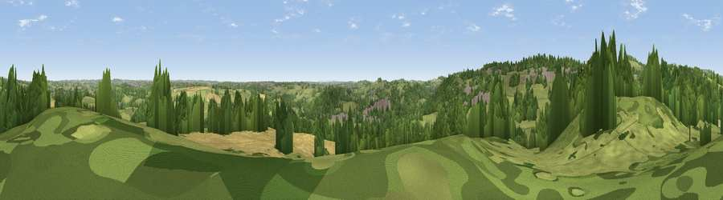

Thorphill
#28937 in England · top 45% of its area beats it · near FritchleyThe view, rendered

A 360° render of this exact spot computed from the terrain model, tree cover and land cover — summer colours, afternoon light, calibrated against photographs of famous viewpoints. Real trees, hedges and buildings will differ in detail.
The panorama
Grey silhouette: terrain skyline in each direction (720 bearings, Earth curvature and refraction included). Dashed green: skyline with trees (+15 m) and buildings (+8 m) as obstacles. Blue strip: how far the ground is visible on each bearing.
Where the view opens
Wedge length = distance to the farthest visible ground on that bearing (vegetation-aware). Rings at 10, 25 and 50 km.
What fills the view
50% grassland · 34% woodland · 11% cropland · 4% built-up
Angular shares of the visible panorama (visual magnitude), not map area. Landscape diversity 0.48 (0–1 Shannon).
Key numbers
More beautiful places nearby
The staircase of upgrades: each row has a higher view potential than everything closer. Driving times are estimates from straight-line distance, calibrated against real road routing — check an actual route before setting out.
| Place | Direction | Drive | Score |
|---|---|---|---|
| The Tors | W · 1 km | ~4 min | 68.9 |
| Crich Stand | NW · 3 km | ~7 min | 73.0 |
| Alport Height | WSW · 6 km | ~13 min | 73.9 |
| Tissington Hill | W · 21 km | ~36 min | 75.5 |
| Viewpoint near Woodhouse Eaves | SSE · 41 km | ~61 min | 77.7 |
| Viewpoint near Mow Cop | W · 50 km | ~72 min | 78.9 |
| Viewpoint near Mow Cop | W · 51 km | ~72 min | 80.2 |
| Viewpoint near Harthill | W · 85 km | ~109 min | 80.5 |
53.07772, -1.45847 · source: dobih hill · position refined by local search. Computed location — check access rights before visiting.